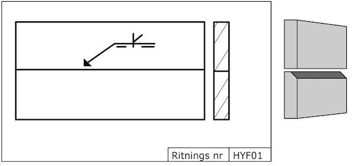

Svets i halv Y-fog
Halv Y-fog är samma sak som Y-fog med bara en fasad vinkel.
Hänvisningslinjens riktning är viktig vid stumfogar
Detta gäller alla osymmetriska fogar. Eftersom den nedre materialdelen är fasad ska hänvisningslinjen peka på denna.

Eftersom halv Y-fog är en osymmetrisk fog är det viktigt att hänvisningslinjen pekar på rätt fogkant.
Så här ser symbolen för halv Y-fog ut.

Här pekar linjen på den övre kanten. Den som ska fasas.
Hylsa som ska svetsas fast i ett rör. Så här ser symbolerna ut.

Hänvisningslinjens riktning är denna gång oviktig eftersom fogberedning endast kan göras på ett sätt.
Fogberednigen består i att hålkanten är fasad. Vanligaste fasvinkeln är 30°

Vilken av bilderna stämmer med ritningen?

Svar:
Vilken av bilderna stämmer med ritningen?

Svar:
Vad kallas den sida som pilen pekar på?
Svar:
På vilken sida ska svetsningen ske?

Svar:
← Halv V-fog J-fog →